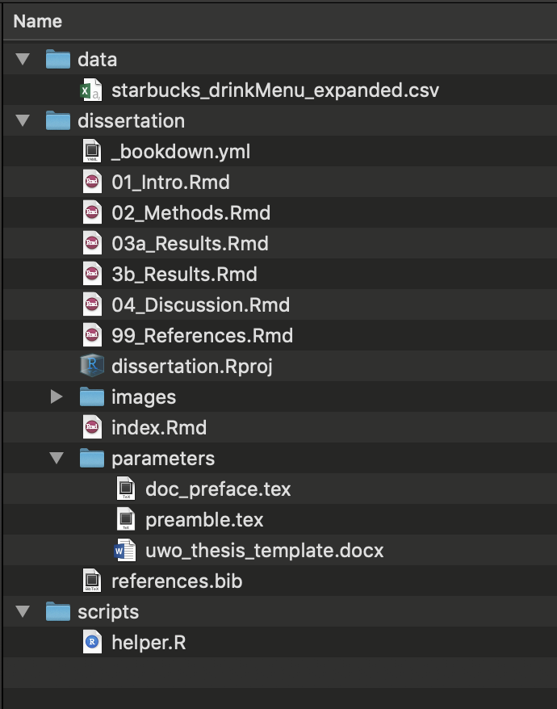

Chapter 3 Getting organized
3.1 Directory structure
A suggestion based on the advice of several clever people I have copied:

In this example…
dissertation
Contains your individual RMarkdown files that contain the bulk of the text of the dissertation.
index.Rmd: Contains your YAML (metadata) that will tell bookdown how to render your book.Rmdfiles that comprise the body of your book. These can be specific chapters, but can also be constructed modularly in whatever way you choose.- Unless specifically told otherwise, bookdown will compile these in alphanumeric order, so they should be named in the order you want them to appear.
- In a nutshell, file names should be
- machine readable
- human readable
- play well with default ordering (thank you, Jenny Bryan).
- The names of the files themselves don’t appear anywhere in the final document. For that, you need to use headers within the body of the .Rmd documents
references.bibis a bib file containing your references. Most popular reference management tools have the option to export your references to a .bib file.
parameters
Contains the files necessary to tell bookdown how to render your final document. These are the workhorses of your dissertation style, and need to be edited according to your university guidelines.
- If you are compiling to a PDF, it needs 2 .tex (LaTeX) files:
doc_preface.tex, which contains the “front matter” of your dissertation (acknowledgements, etc), andparams.tex, which contains the Latex parameters required to compile - If you are compiling to a Word document, it needs a template file. This could technically just be a blank document. The important thing is that it has been saved with the Word styles you want to employ in your final .docx output.
data
Contains any raw data files (.csv, .xlsx, etc.). Ideally, these don’t get touched after you put them here, because any further manipulation will be done using .R scripts (which will make it easier to track your changes to the data)
scripts
Contains any helper scripts you used along the way (e.g., for your analysis)